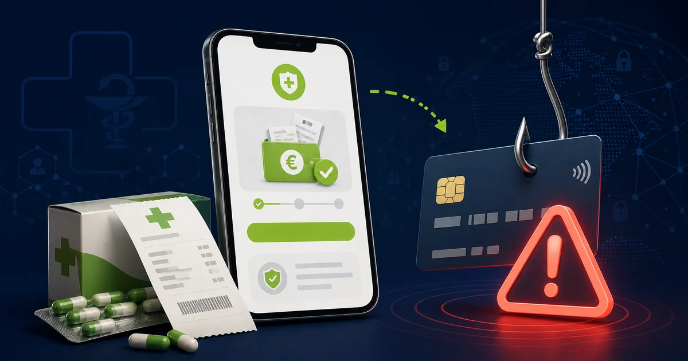

In breve
Non inserire la carta per ricevere il presunto rimborso.
Il 18 agosto 2026 CERT-AGID ha segnalato una campagna di phishing che riproduce grafiche e loghi del Fascicolo Sanitario Elettronico e di istituzioni italiane. Promette 20,73 euro, presentati come rimborso del 19% sui medicinali, ma la procedura serve a raccogliere dati anagrafici e tutti i dettagli della carta di pagamento.
Fonte istituzionale controllata. Il funzionamento della campagna è documentato dal CERT-AGID, che ha già avviato le attività per dismettere il dominio malevolo.
Come funziona il falso rimborso
La pagina contraffatta accompagna la vittima lungo un percorso costruito per sembrare ordinato e sicuro. All’inizio compare perfino un semplice calcolo matematico presentato come verifica anti-robot: secondo CERT-AGID, oltre a trasmettere fiducia, questo passaggio può ostacolare alcuni controlli automatici.
Dopo la verifica, il sito annuncia un rimborso farmaci di 20,73 euro, collegandolo alla percentuale del 19%. Per “completare il dossier” chiede nome e cognome, data di nascita, indirizzo, CAP, città, telefono ed email.
L’ultimo passaggio rivela il vero obiettivo: per ricevere l’accredito vengono richiesti titolare, numero della carta, data di scadenza e codice CVV. Alla fine appare una falsa conferma con numero di protocollo, stato della pratica e promessa di pagamento entro sette giorni lavorativi.
Perché può sembrare credibile
- L’importo è piccolo e preciso. Una cifra come 20,73 euro appare più realistica di una promessa esagerata.
- Usa una percentuale conosciuta. Il riferimento al 19% richiama le reali detrazioni fiscali sulle spese sanitarie, ma non rende autentico il rimborso.
- Mostra loghi istituzionali. Nella pagina vengono imitate le grafiche del Fascicolo Sanitario Elettronico, del Ministero della Salute, del Dipartimento per la trasformazione digitale e del Ministero dell’Economia e delle Finanze.
- Simula controlli e protocolli. Captcha, stato “in elaborazione” e numero di pratica sono elementi grafici facili da riprodurre e non provano l’identità del sito.
I segnali che rivelano la truffa
Il rimborso arriva senza una richiesta precedente
Un accredito inatteso deve essere verificato entrando autonomamente nei servizi ufficiali, senza usare il collegamento ricevuto.
Per accreditare denaro chiede il CVV
Il codice di sicurezza serve ad autorizzare pagamenti con la carta, non è necessario per ricevere un rimborso. Non comunicarlo.
La pagina raccoglie troppi dati
Anagrafica completa, recapiti e carta permettono non soltanto pagamenti fraudolenti, ma anche truffe successive molto personalizzate.
Il dominio non è istituzionale
Controlla l’indirizzo effettivo nella barra del browser. Parole come “salute”, “fascicolo” o “gov” nel nome non garantiscono che il sito appartenga a un ente pubblico.
Hai già inserito i dati?
- Hai comunicato la carta o il CVV: blocca o sospendi subito la carta dall’app e chiama la banca tramite il numero ufficiale. Controlla i movimenti e segnala le operazioni che non riconosci.
- Hai ricevuto un codice OTP: non comunicarlo. Se lo hai già inserito, contatta immediatamente la banca.
- Hai fornito dati personali: aspettati possibili telefonate, email o SMS molto credibili. Non confermare altre informazioni e non seguire nuove istruzioni ricevute da sconosciuti.
- Conserva le prove: salva messaggio, indirizzo del sito e schermate senza tornare a interagire con la pagina.
- Segnala l’accaduto: puoi rivolgerti alla Polizia Postale e inviare la pagina sospetta al CERT-AGID.
Come verificare una comunicazione sanitaria
Non partire mai dal link contenuto in un messaggio inatteso. Apri direttamente il portale o l’app regionale del Fascicolo Sanitario Elettronico, oppure cerca il recapito dell’ente sul suo sito ufficiale. Se nell’area personale non compare alcuna comunicazione, non inserire dati nella pagina ricevuta.
Come segnalarla
Puoi inoltrare l’indirizzo sospetto al CERT-AGID tramite malware@cert-agid.gov.it. Non allegare pubblicamente numeri di carta, documenti o altri dati personali.
Trasparenza
Fonti verificate
Aggiornamenti e correzioni
Nessuna correzione al momento. Per segnalare un errore scrivi a redazione@hackerino.it.
Aiuta la redazione
Hai ricevuto questo messaggio?
Puoi inviarci una segnalazione senza includere numeri di carta, documenti o altri dati riservati.